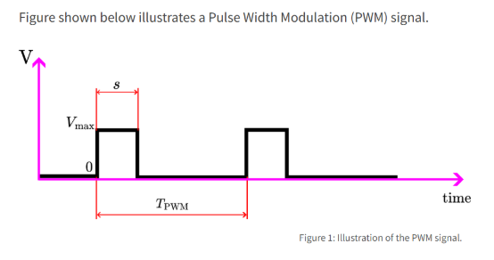
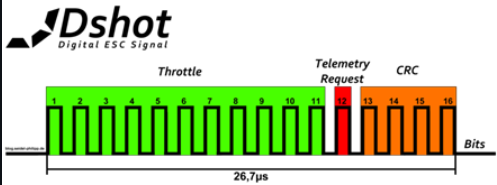

DShot Implementation
Flight Controller Implementation
PWM Setup
The following resources were used to determine the PWM setup: STM32 PWM Signal Generation, stm32_hal_dshot on GitHub, and Betaflight DShot API Docs.
PWM Calculations

TPWM is the period of the PWM pulse signal. We are using DShot600, so TPWM is
1.67 µs.
ƒPWM = 1 / TPWM = 1 / 1.67µs = 598,802.395 ≅ 600 KHz
This is the bits/second rate of DShot600. The STM32 equation to find ƒPWM is:
ƒPWM = ƒTC / ((kPS + 1)(kP + 1) × fTC)
ƒTC is the frequency of the timer clock; we are using a timer clock of 240 MHz.
kPS is the prescaler value. kP is the period value, also known as the auto reload register (ARR).
The prescaler is [240 MHz / 12,000,000 (DShot600) − 1] = 19. The tick rate = 240,000,000 / (19 + 1) = 12,000,000.
The period of one tick is 1 / 12,000,000 = 83.3 ns. That is how long one timer tick takes. We need a full 1.67 µs frame.
So we need 1.67 µs / 83.3 ns = 20 ticks. Our ARR will be set to 20. The counter will reset every 20 ticks as a full frame will
have completed in that time.
The duty cycle is calculated as D = CCR / (ARR + 1), where CCR is the capture/compare register.
So, to find the CCR value for bit 0: 0.374 = CCR / (20 + 1), so CCR = 21 × 0.374 = 7.854 ≈ 8.
The CCR value for bit 1: 0.749 = CCR / (20 + 1), so CCR = 21 × 0.749 = 15.729 ≈ 16.
PWM Configuration
For testing to see if the oscilloscope could capture the PWM output signal, one of the PWM pins was changed from normal mode to circular mode. This means that the DMA buffer will continuously send the contents of the buffer to the pin. In a normal non-testing environment, this will need to be changed back to normal so that the DMA contents are transferred once and then the buffer is freed.
Motor Values
The following resource was used to determine idle and dynamic motor values: Betaflight Dynamic Idle.
Idle Motor Values
The recommended throttle idle value is 5.5% of the throttle range. The calculation is as follows:
((2048 − 48) × 0.055) + 48 = 158
158 is therefore our initial idle value.
ESC Implementation
Each of the 4 ESCs is set up similarly, with minor differences to allow identification by the flight controller.
Bit Capture
The ESC is currently set to use input capture through timer 3. The input capture will trigger on each rising and falling
edge. Standard DShot frames are 16 bits long, meaning the buffer filled by DMA will have 32 entries. Counting both types
of edges will incur two entries per bit being transmitted. To decode the timings, the following duty cycle and bit timing
tables are used:
| Parameter | Bit = 0 | Bit = 1 |
|---|---|---|
| Duty Cycle | 37.425% | 74.850% |
| Protocol | Bit Rate | Time per Bit | Frame Duration |
|---|---|---|---|
| DShot 600 | 600,000 bits/s | 1.67 µs/bit | 26.7 µs/frame |
To calculate the value of each bit we take the difference between the second found edge and the first found edge. This will result in a positive time difference. Then, we compare that value to
1.67 µs × 0.7485. If the comparison finds that the captured value is less than the result of that multiplication, then the value of the bit is 0. Otherwise, the value of the bit is a 1.
This is done for each set of rising and falling edges. The results of the decoding are placed into a different buffer of length 16 to
match the bits found in a standard DShot frame.
Bit Breakdown
The bits of the DShot frame are broken down as follows:

| Bits | Field | Details |
|---|---|---|
| 11 | Throttle / Command | 0–47 = command, 48–2047 = throttle |
| 1 | Telemetry Request | |
| 4 | Checksum |
Once all bits are gathered, the CRC is calculated on the decoded bits. The formula is derived from Betaflight's description of the DShot protocol:
Special Functions
Arming Sequence
Currently, the arming sequence is sending beep 1, which corresponds to a throttle value of 1. Then there is a 260 ms delay,
followed by sending beep 2, which corresponds to a throttle value of 2, waiting 260 ms, sending beep 3, which is a throttle
value of 3, waiting 260 ms, sending zero throttle, which is a throttle value of zero, then waiting 520 ms.
Motor Spin Direction
When DSHOT_CMD_SPIN_DIRECTION_2 is sent, which corresponds to a throttle value of 8,
the direction that the motors are spinning should be reversed permanently until a time where
DSHOT_CMD_SPIN_DIRECTION_1 is sent, which corresponds to a throttle value of 7.
The same is true if DSHOT_CMD_SPIN_DIRECTION_1 is sent; it should persist until DSHOT_CMD_SPIN_DIRECTION_2 is sent.
The motors should start in the default direction.